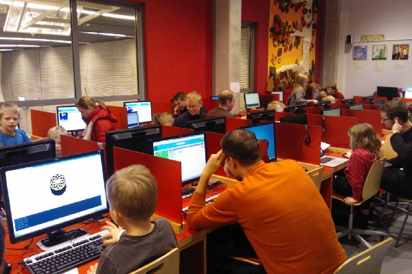
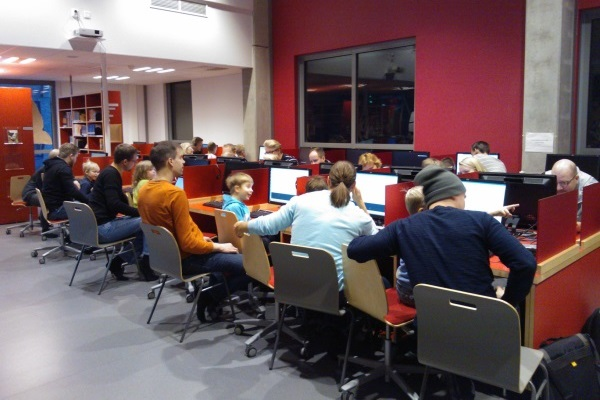
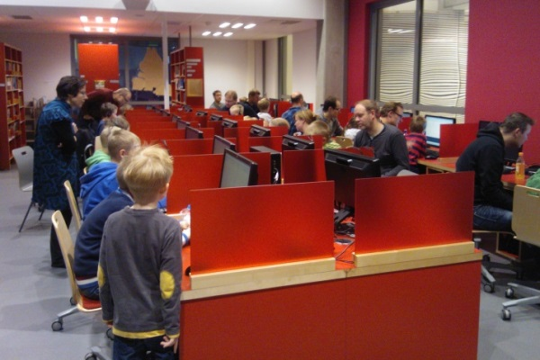

Kokosimme kahdesta ensimmäisen päivän läpikäyneistä kakkospäivään oman ryhmän. Molemmat ryhmät olivat käyneet aikaisemmin saman asian Turtle Roylla eli sekvenssi ja toisto olivat tuttuja. Suunnitelma oli käyttää ensimmäinen tunti code.org sivuston tehtävien tekemiseen ja toinen Turtle Roylla.
Aloitimme lyhyellä esittelyllä Flurbs ja Angry Birds hahmojen liikutteluun. Tärkeää oli huomata, että kun Flurbs osaa liikkua joka suuntaan, Angry Birds linnut puolestaan lentävät vain nenän osoittamaan suuntaan. Huoltajat avasivat sillä aikaa studion ja lapset pääsivät pian tekemään tehtäviä.
Vanhimmat koodikoululaiset etenivät hyvinkin nopeaa ja kaipasivat varsin pian haastavampia tehtäviä. Flappy Bird osoittautui hyvin toimivaksi koska sillä siinä oli toimintoja riittävästi ja sillä sai muokattua pelin oman näköisekseen. Nuorimmat sen sijaan etenivät sokkelotehtävissä ja keräsivät mettä mehiläisen kanssa.

Kun osa koululaisista koki code.org:n liikaa peliksi jatko-opiskelu Turtle Royn parissa osoittautuikin sitten erinomaisen haasteelliseksi. Uusien temppujen opetus, funktiot ja parametrisoidut funtiot, tarjosivat uutta asiaa yllin kyllin sulateltavaksi. Tähän selvästikin pitää varata aikaa runsaasti jatkossa.
Kolmas kerta sai kannatusta. Palaamme siis koodailemaan piakkoin.
Koodikoulu kokoontui tällä kertaa Teknologiakylään Yritystakomolle. Mukaan tuli takojien omia lapsia sekä muita asiasta kiinnostuneita huone täyteen. Koululaisia saapui paikalle jo hyvissä ajoin virittelemään koneitaan. Tunnelma oli katossa jo ennen avaustakaan kun nopeimmat jo kyselivät ohjeita.
Siispä lyhykäisen esittelyn jälkeen siirryttiin suoraan Turtle Royn pariin ilman kummempia lämmittelyjä. Pikkusormet etsivät näppäimistöltä kirjaimia ja kokeilivat liikutella kilpparia. Opettajan ei paljoa tarvinnut asiaa kertoa, riitti kun esitti käskyistä periaatteen ja lapset kokeilivat innolla. Ehkä syynä tähän ainakin osittain oli, että lapset olivat pääsääntöisesti jo koulunsa aloittaneita.
Suuret kiitokset tästä päivästä menevätkin Takomolle. Tilat olivat erinomaiset ja saimme hedelmiä ja pillimehut koko luokalle. Kuvia löytyy Takomon Facebook sivulta.
Järjestäjille tästä kerrasta jäi taskuun josko koodikoulu kannattaisi aloittaa setshape-käskyllä? Jää kokeiltavaksi ensi kertaan.
Pienet koodarinalut täyttivät Metsokankaan koulun medialuokan jälleen kun toinen Metsokankaan Lasten Koodikoulun ryhmä kokoontui lauantaina 1.11.. Tapahtuma oli jälleen menestys. Kaikki lapset olivat innolla matkassa kun liikkeelle lähdettiin aikaisempien vinkkien perusteella hyväksi havaitulla robottileikillä. Muutaman virheen kautta robottiope saatiin ohjattua paikalleen luokan eteen.

Ryhmässä oli tällä kertaa hieman nuorempia lapsia kuin edellisellä kerralla. Olisikin hyvä jos ryhmän ikäjakauma olisi tasaisempi. On iso ero onko lapsi alle kouluikäinen vai jo muutaman vuoden koulua käynyt. Etenemistahti on huomattavasti nopeampi vanhemmilla osallistujilla. Ehkäpä tästä lähtien toimimme näin.
Ensimmäinen tehtävä oli perinteiseen tapaan neliön piirtäminen, ja heti perään harjoiteltiin kolmiota. Nopeimmat piirtelivät tässä vaiheessa jo omia kuvioita ja kokeilivat uusia toimintoja. Koodaajien joukossa huomattiin varsin pian ongelma ettei ole olemassa peruuta käskyä. Suuren ahaa-elämyksen osallistujille tuotti huomaus kuinka yksittäisistä komennoista muodostuu ohjelmalistaus jota voi muokata haluamallaan tavalla ja ajaa aina uudestaan ja uudestaan.
Tässäkin ryhmässä oli innokkaita jatkoon osallistujia. Saamme Metsokankankaalle mukavasti kahden ekapäivän osallistujien joukosta jatkoryhmän. Eiköhän siis kokoonnuta porukalla vielä syventämään koodaustaitoja kuluvan vuoden aikana.
Oulun ensimäinen Lasten Koodikoulu järjestettiin Metsokankaan koululla lauantaina 11.10. klo 10.00 - 12.00. Tapahtuma oli todellinen menestys kun kaikki ilmoittautuneet noin 30 lapsi/huoltaja paria saapuivat paikalle koodailemaan. Lapsien ikähaitari oli tasaisesti jakautunut 4-9 välille. Käytössä oli koulun medialuokka jossa suorastaan uudenkarheat koneet ja nopsa nettiyhteys takasivat tekniset puitteet päivälle.

Osa lapsista oli perehtynyt etukäteen Turtle-Roy ohjelmaan ja he piirtelivät itsekseen kuvioita jo ennen aloitusta. Tästä huolimatta kaikki olivat innolla matkassa. Joukossa oli selvästi myös koodaustaitoisia vanhempia ja he pystyivät etenemään nopeammassa tahdissa lapsensa kanssa kuin mitä opettajan johdolla.
Liikkeelle lähdettiin robottileikillä jossa opettaja piti ohjata käskyillä "askel eteen", "käännös vasempaan" ja "käännös oikeaan" opettajan pöydän takaa esteet väistellen pöydän eteen. Leikillä saatiin mukava tuntuma kuinka tietokoneelle annetaan käskyjä.
Sitten siirryttiinkin jo koodaamaan. Opetus lähti liikkeelle viivan piirtämisestä ja osoittimen kääntämisestä. Ensimmäisessa harjoituksissa lapset saivat itse piirtää laatikon ja kolmion. Kokeilun ja erehdyksen kautta kaikki saivat ruudulle omia kuvioita. Eväiden syönnin jälkeen opeteltiin sitten käskysarjoja ja toistoa. Pienenä lisähauskana sai kokeilla tekstin piirtämistä ruudulle ja tietokoneen laittamista puhumaan. Lopuksi oman työn sai mukaan jakamalla se ja palautteen mukaan koodaus jatkui kotona innolla!
Osallistujien toiveena oli, että Koodikoululle saataisiin nopeasti jatkoa. Tätä toivoivat niin vanhemmat kuin lapsetkin. Eräänkin 9-vuotiaan ehdotus oli, että Turtle-Royn jälkeen siirryttäisiin Javaan! "Vaikka JavaScript konsoliin häkkäiltäisiin jotain...". Päivän oppina opettajalle onkin, että ohjelmoinnin opetukselle on niin kysyntää kuin tarvettakin. Lasten kyky omaksua tietoa on todella nopea ja lapset haluavat kiihkeästi osata toimia paremmin internetissä. Niin, eikös me aikuisetkin...